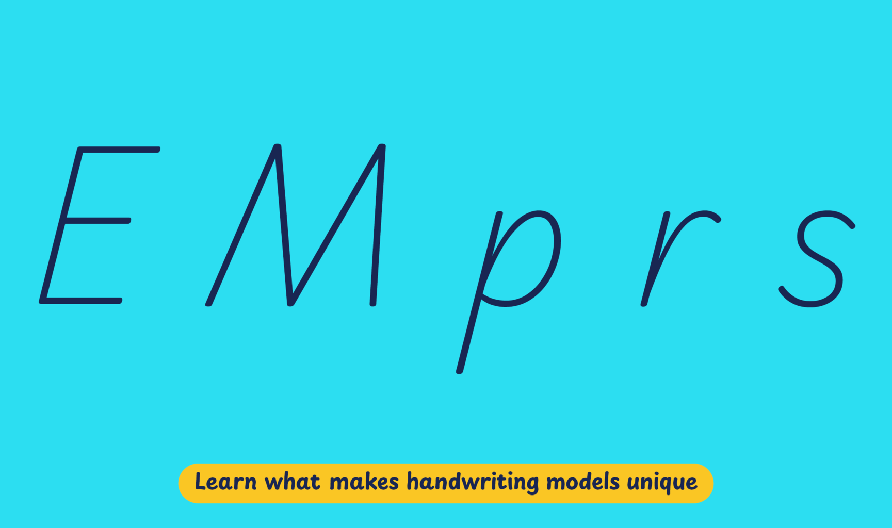

The latest edition of the national curriculum, published in 2014, requires that at the end of fourth grade, students must “write all the letters, write clearly and understandably.” Handwriting teaching in Iceland happens during grades 1-3 (6-9 years old), and books by the MMS adhere to a progressive system based on simplified modern italic styles.
According to this system, students should first be introduced to the lowercase letters of Grunnskrift or the initial model. These are simplified and unconnected letters, slightly slanted and with exit strokes. This should be followed by uppercase letters of the same model. Finally, in the third grade (8-9 years old), students learn Tengiskrift or joined letters.
Playwrite Ísland is a variable font with a weight range from Thin (100) to Regular (400), and supports over 150 Latin-based languages.
To contribute, see github.com/TypeTogether/Playwrite.
This slanted modern cursive handwriting is crafted for high-speed writing and features print-style uppercase letters, with 'M' notably having splain legs. The lowercase letters are inspired by early Italic calligraphies, including the chancery style. Letters that end with a descender do not connect to the subsequent character, making this a semi-connected model. Both 'b' and 'p' feature closed bowls, while 'z' and 'r' are designed with an italic structure, stressing the script’s aesthetic and functional attributes.

Playwrite Ísland appears in font menus with a two-letter country code ‘IS’,
Playwrite IS, and features four styles: Thin, ExtraLight, Light, and
Regular.
The download .zip file includes the variable font and standard static ttf fonts
for each style.
The Playwrite school fonts are based on the findings of Primarium, a groundbreaking educational effort that documents the history and current practice of handwriting models taught to primary school students worldwide. This typographic engine serves teachers, educators, and parents by generating localized libre fonts. These Playwrite fonts are complemented by Playpen Sans, an informal and fun typeface designed for annotations, instructions, and student notes – that also includes emojis.
For more information about the Primarium project, visit primarium.info and to learn more about handwriting education in Ísland, see primarium.info/countries/iceland.
Windows: Download the font file to your computer. Navigate to where you saved the font file and double-click it to open. Click the "Install" button at the top of the font preview window. The font is now installed and ready to be used across your apps.
macOS: After downloading the font file to your Mac, right-click it in Finder and select "Open With" > "Font Book". Then, click "Install Font" in the font preview window that pops up. The font is now installed and ready to be used across your apps.
The Playwrite font family uses complex OpenType features to generate connected writing. Some common applications require these features to be manually activated.
Note: This font family doesn't include Bold or Italic styles, so please avoid applying them in text editors. If you use the common 'B' and 'I' buttons, you will automatically generate low-quality styles.
Google Docs and Slides: From the font selector drop-down, go to "More Fonts" and search for the desired font name, in this case, "Playwrite IS", and click OK. If some text is already selected, the font choice will apply.
Microsoft Word: Go to Format in the Menu bar, select Font, and then the Advanced tab. Activate "Contextual Alternates" and "Kerning for fonts below" to apply these settings to all text sizes.
LibreOffice: In macOS, to select the different styles, go to Format in the Menu bar, select Character, and use the Typeface menu.
Adobe InDesign: Open the Paragraph Panel and select Adobe "World-Ready Paragraph Composer" from the contextual menu.
Adobe Illustrator: Navigate to Preferences > Type, check the "Show Indic Options" box, and close preferences. Then open the Paragraph Panel and select "Middle Eastern Composer" from the contextual menu.
Adobe Photoshop: Access the Paragraph Panel, then choose "World-Ready Layout" from the contextual menu.
The above instructions are also available in PDF format here.